MS Sans Serif — 0 differing pixels
Date/Time · 51 × 13 native pixels

Typography components · Source files and verification notes
Original FON glyphs and advances, with explicit family selection: MS Sans Serif, System, and Fixedsys. System's bold weight is native. MS Sans Serif bold uses Microsoft's documented GDI one-pixel overstrike (printed page 423). No browser font rasterization or screenshot-derived glyphs.
These font-only crops use fixed reference coordinates and exact RGBA comparisons. No tolerance, masking, fitting, or automatic alignment. Samples are displayed at 2×; the comparison is performed at 1×. Sources are the original Windows 95 screenshots. All glyphs and metrics are additionally checked against the pinned FON files by the extraction script. These samples verify the displayed strings, not every Windows rendering configuration.
Date/Time · 51 × 13 native pixels
Control Panel · 76 × 13 native pixels

Back · 32 × 16 native pixels

This document provides · 176 × 15 native pixels

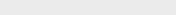
How to Use This Document · 192 × 15 native pixels

Native strikes are selected directly, without resizing. These sheets show rendered output for inspection.
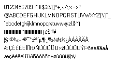
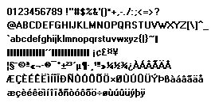
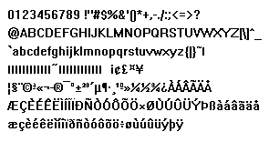
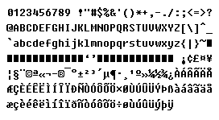
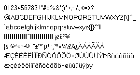
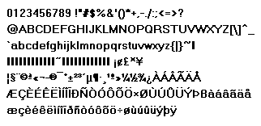
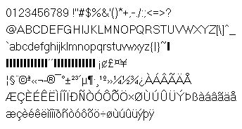
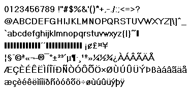
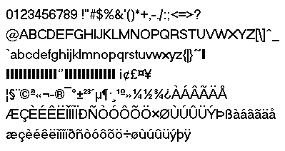
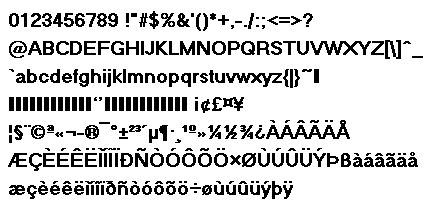
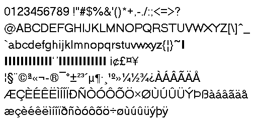
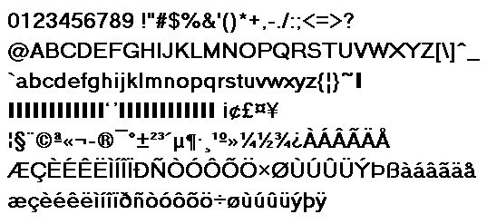
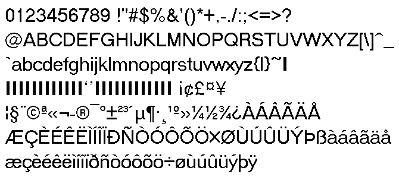
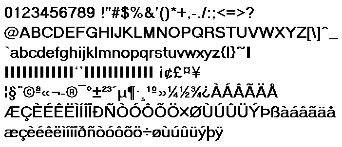